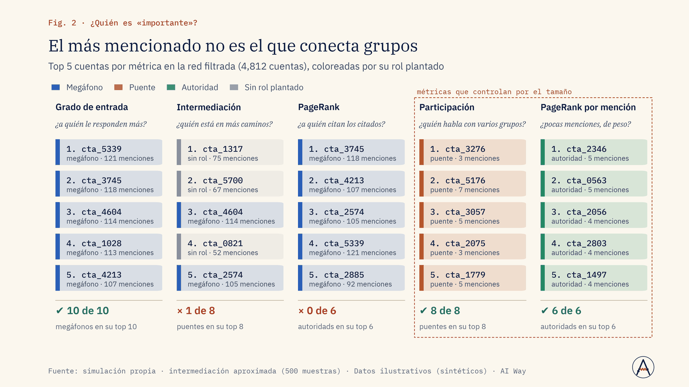
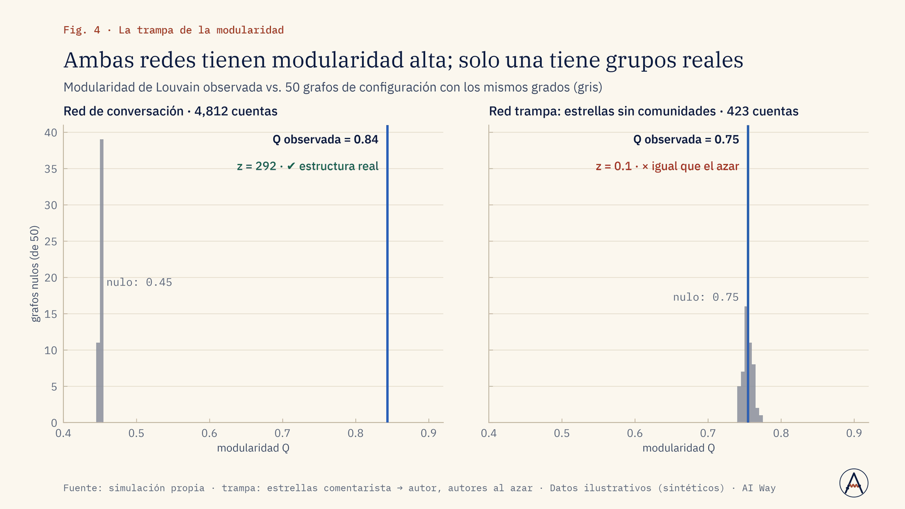
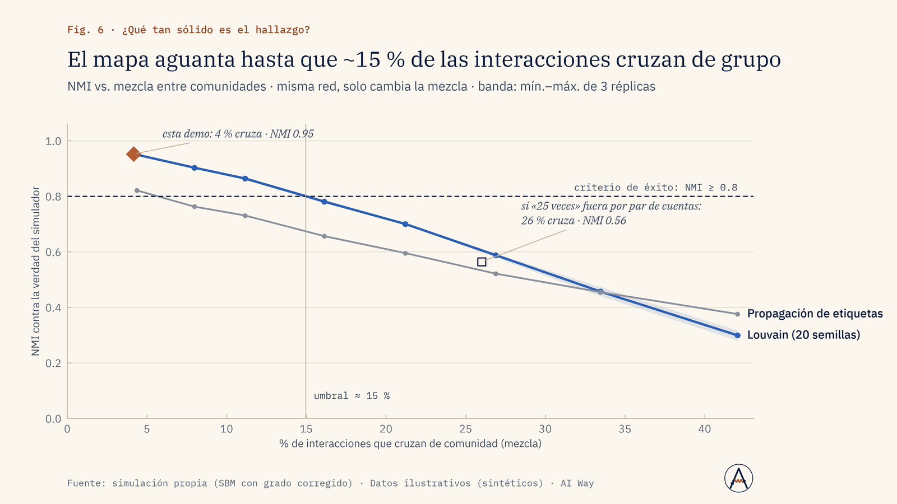

Marketing
¿Qué creadores llevan el mensaje a más de un grupo?
Identificamos puentes por su participación entre comunidades, no por seguidores; los megáfonos van aparte.
Armar la lista de creadores que toca varias comunidades.
Servicio · Nº 04
Quién conversa con quién sobre tu marca, qué grupos se forman, quién los conecta y qué tan reales son, sin confundir una métrica alta con un hallazgo.
01 · El problema
Las marcas ven listas de «influenciadores» ordenadas por número de seguidores y redes que parecen bolas de pelos.
No saben qué comunidades existen alrededor de su tema, quién es puente entre ellas (la cuenta que lleva un mensaje de un grupo a otro), ni si la estructura que ven es real o un artefacto de cómo se armó la red.
02 · Enfoque
03 · Resultados de la demo
Red simulada de 6,000 cuentas y 14,000 interacciones con 12 comunidades, 10 megáfonos, 8 puentes y 6 autoridades plantados, más una red trampa sin comunidades. Se mide cuánto de esa verdad recupera el método.
De 6,000 cuentas a 12 comunidades legibles
Fuente: simulación propia (SBM con grado corregido) · Datos ilustrativos (sintéticos) · AI Way



04 · Límites declarados
05 · Aplicaciones de negocio
Ejemplos de decisiones que este servicio ayuda a tomar; el alcance se define en el diagnóstico.
Marketing
Identificamos puentes por su participación entre comunidades, no por seguidores; los megáfonos van aparte.
Armar la lista de creadores que toca varias comunidades.
Ventas e ingresos
Mapeamos las comunidades del tema y medimos en cuáles aparece la marca y en cuáles solo la competencia.
Abrir mercado en las comunidades donde no estamos.
Operación y costos
Medimos qué comunidades cubre cada cuenta contratada: el alcance se cuenta por comunidad, no por impresión.
Recortar contrataciones que le hablan al mismo grupo.
Riesgo y crisis
Louvain y el tono de los textos ubican las comunidades hostiles; la red muestra los puentes que la difunden.
Responder a tiempo en los grupos y puentes que más la propagan.
Dirección y estrategia
Comparamos la modularidad contra un modelo nulo y medimos la estabilidad de la partición entre 20 semillas.
Decidir sobre comunidades probadas, no sobre un dibujo.
Segmentación de clientes
Agrupamos clientes por su huella de lugares con UMAP y HDBSCAN y los cruzamos con nivel socioeconómico.
Ajustar ubicación, surtido y mensajes por segmento.
06 · Paquetes
Una red de un tema (hasta 20 mil nodos), comunidades, ranking de roles y visual interactiva.
Duración típica: 2 semanas
Varias redes o periodos comparados, interpretación de comunidades con textos, estabilidad y modelo nulo, recomendaciones de activación.
Duración típica: 3 a 4 semanas
Redes de 50 mil nodos o más de forma recurrente, integración con la escucha digital, detección de cuentas coordinadas y segmentación por comportamiento.
Duración típica: 6 a 8 semanas + recurrente
Sin precios publicados: cada propuesta se cotiza tras un diagnóstico de alcance.
07 · Preguntas frecuentes
Sí, por rol y comunidad; el número de seguidores es solo un dato.
Hemos trabajado con más de 55 mil nodos; más grande se muestrea con criterio.
Son cuentas; las cuentas automatizadas se marcan aparte.
Las redes de conversación están fragmentadas; filtramos y reportamos las que importan.
08 · Descarga
Presentación de la demo (PDF, 1.9 MB). El caso completo: problema, método, resultados contra criterio y límites declarados.
Descargar PDFSiguiente paso
En una llamada de 30 minutos revisamos si se puede, cómo lo mediríamos y qué no te podemos prometer.
Otros servicios